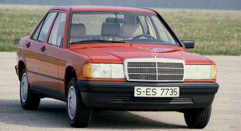
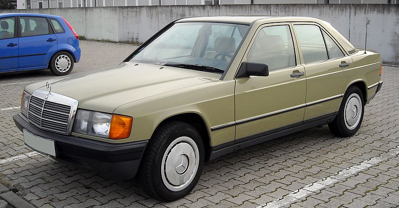
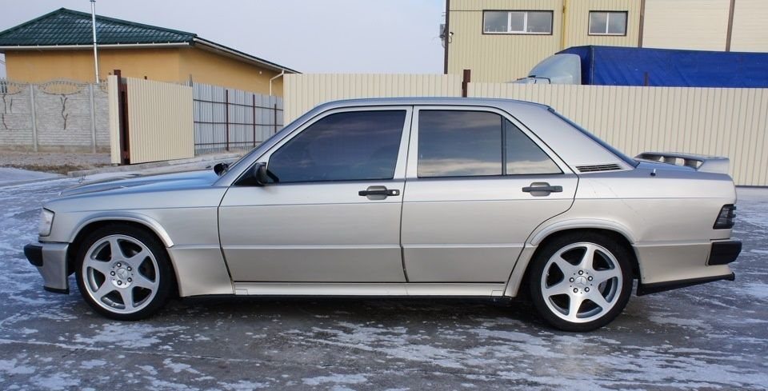
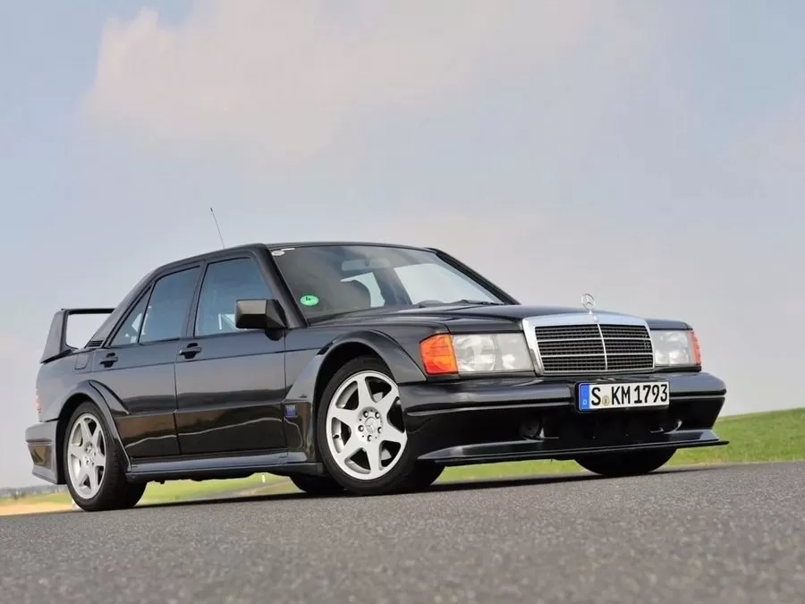
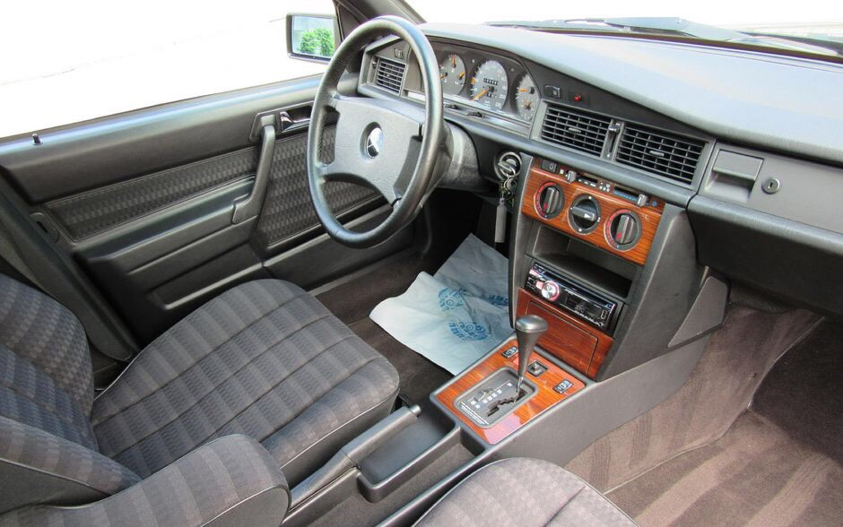
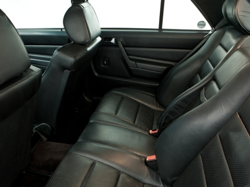
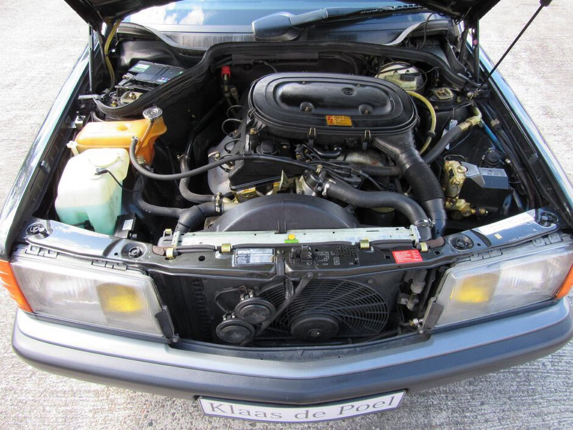
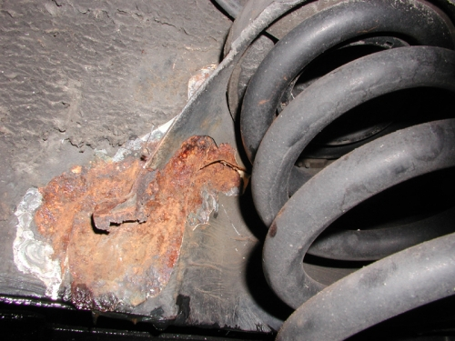
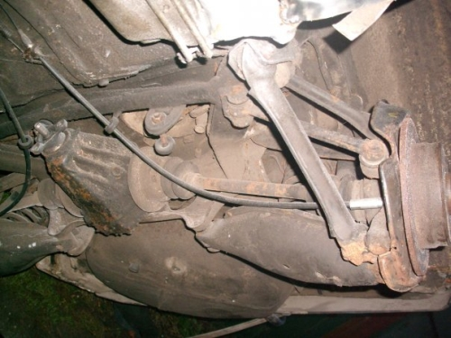
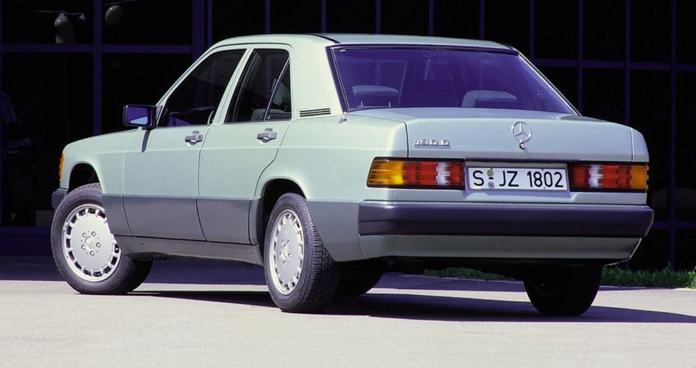

Как выбрать подержанный Mercedes 190 W201 в 2022?
- Вступление;
- Описание модели;
- История;
- Кузов;
- Салон;
- Двиатели;
- Трансмиссия;
- Ходовая часть;
- Цены на запчасти и обслуживание;
- Итог;
Вступление
В начале 80-х Mercedes-Benz решился удивить мир малогабаритным экономичным автомобилем — эдаким конкурентом BMW 3-серии. По началу даже предполагалось оснастить его передним приводом. Но в последний момент инженеры Mercedes передумали в пользу революционной многорычажной задней подвески.
И не прогадали. Сохранив традиционную компоновку, новый Mercedes-Benz 190 на дороге вел себя почти как переднеприводной. Управляемость, как для начала 80-х, была образцовой.
Этой статьей АвтоПортал продолжает серию материалов о выборе и покупке подержанных автомобилей. С каталогом подержанных авто вы можете ознакомиться на наших страницах, перейдя в раздел "Б/У авто".
Описание
Автомобиль представляет собой 4-дверный седан. В других кузовах, он не выпускался. Габариты Длина/Ширина/Высота
составляют 4448/1690/1390 мм. Колесная база равна 2665 мм. Снаряженная маса приравнивается к 1200 кг, а полная
достигает 1750 кг. Объем багажника, значительно меньше, чем у старших моделей и равен всего 410 литрам. В бак
можно заправить до 55 л. Тип привода: задний, а подвеска независимая. КПП: 4- и 5-ст. механическая и 4-ст.
автоматическая. Даигатели ставились самые разнообразные - бензиновые: карбюраторные (2,0 л/90 л.с., 2,0 л/105
л.с.), распределенный впрыск: 1,8 л/109 л.с., 2,0 л / 122л.с., 2,3 л/132 л.с., 2,3 л/185 л.с. (16V), 2,5 л/204
л.с. (16V) Бензиновый 6-цилиндровый: 2,6 л/160 л.с,
дизельные: 4-цилиндровый: 2,0 л/75 л.с. 5-цилиндровые:
2,5 л/90 л.с., 2,5 л/122 л.с. (Turbo).

История
- 11.1982 Начало выпуска 4-дверного седана MB-190 с индексом кузова W201
- 09.1983 Состоялась премьера модели 190D и «заряженной» версии 190Е 2,3-16
- 09.1984 Мощность 2,0 л карбюраторного двигателя М 102.924 подняли до 105 л. с.
- 05.1985 Появился новый дизельный 5-цилиндровый мотором 602.911 объемом 2,5 л
- 06.1985 На все «190-е» начали устанавливать телескопический «дворник» переднего стекла и 15-дюймовые колеса
- 09.1985 Все бензиновые версии комплектуют катализаторами
- 09.1988 Модельный ряд «190-х» был подвергнут рестайлингу
- 09.1988 «Заряженную» версию 190Е 2,3-16 сменила более экстремальная версия – 190Е 2,5-16, а также появилась самая мощная дизельная версия 190D2,5 Turbo
- 03.1990 Концерн выпустил модель 190Е 1,8, которая вытеснила 2,0 л карб. версию
- 01.1991 Начали устанавливать ABS в стандартной комплектации
- 10.1992 Все модели оснастили центральной блокировкой замков
- 05.1993 MB-190 сменило новое поколение седанов С-класса
Впервые самый маленький Mercedes-Benz с индексом кузова W201 появился в ноябре 1982 года. Все «190-е» выпускались только с одним типом кузова — 4-дверный седан. Это была принципиально новая разработка, поскольку она не пришла на смену предыдущему поколению, а стала первой моделью Mercedes-Benz в европейском сегменте класса D.
Первоначально автомобилю присвоили обозначение «190» (первые две цифры в МВ обозначают объем двигателя, который округлили в меньшую сторону — 1985 см3). Этим обозначением, вопреки традиции компании, и продолжали нарекать все остальные модификации «190-го», независимо от объема моторов.
Стремясь отвоевать покупателей у основного конкурента — BMW, компания в 1983 году представила спортивную версию «190-го», оснащенную 185-сильным 16-клапанным мотором объемом 2,3 л. С ним полуторатонный автомобиль разгоняется до скорости 225 км/ч и набирает первую «сотню» всего за 7,5 с. «Заряженную» версию отличают широкие аэродинамической формы бамперы и пороги, спойлер на крышке багажника, низкопрофильные шины. Немного позже эту версию заменила еще одна спортивная модификация МВ-190 с более мощным и совершенным 195-сильным двигателем объемом 2,5 л.
С 1985 года на все модели «190-го» начали устанавливать один активный телескопический «дворник», значительно увеличивающий площадь очистки ветрового стекла, и гидротолкатели клапанов двигателя.
В сентябре 1988 года модельный ряд МВ-190 подвергся рестайлингу: нижние боковины дверей получили широкую защитную пластиковую накладку (так называемая "листва") , изменились передние и задние бамперы, а также была усовершенствована форма сидений.
Понимая, что для сохранения своего места на рынке нужна не просто модернизация «190-го», компания в мае 1993 года сменила модели W201 на седаны нового поколения С-класса с индексом кузова W202.
Кузов
Заводскую защиту от коррозии можно считать хорошей. Однако для наших условий, да еще и с поправкой на возраст, этого “хорошо” недостаточно.
Багажник (у древних экземпляров) может корродировать изнутри. В придачу, краска у “Мерседесов” традиционно очень прочная, и из-за этого под ней можно не заменить следы ржавчины. Бывает такое: снаружи все прекрасно, а внутри металл уже давно “сгнил”. Самые “ржавоопасные участки” такие же, как и многих других авто: пороги, арки колес, кромка багажника, низ дверей.
Любопытный момент — передние крылья крепятся на болтах, что весьма удобно при ремонте. Швы и стыки покрыты герметизирующей мастикой, которую при ремонте следует разогревать.
Салон
На заднем сиденье трое помещаются с трудом, а места для ног катастрофически не хватает. Интересно, что из-за некоторой тесноты сзади “стодевяностый” прозвали четырех-дверным купе.
Строгий интерьер выдержан в фирменном стиле компании. Попав внутрь, нисколько не сомневаешься, что это Mercedes-Benz. При желании можно найти интересные модификации с электростеклоподъемниками на всех окнах и электрорегулирокой сидений (для европейских авто 80-х роскошь немыслимая). Интересно, что Mercedes 190 одним из первых получил подушку безопасности. Главная особенность печки — раздельное управление на левую и правую сторону салона.
Обидно, что теснота в салоне не пошла на пользу багажнику. Его объем - только 410 литров. Всему виной - бензобак, расположенный как раз за задним сиденьем. Из-за него и спинка не складывается.
Еще один чисто мерседесовский недостаток связан с передними креслами. С годами они продавливаются на всех машинах. Причем наиболее уязвимы кресла в машинах до модернизации 1988 года, после этого конструкцию изменили и каркас прогибался не так быстро.
Люки с электрическим приводом не работают на каждом третьем автомобиле. Механические, понятное дело, намного надежнее.
До модернизации 1988 года проблемы вызывала конструкция замка зажигания, по традиции расположенного не на рулевой колонке, а прямо на передней панели.
Двигатели
Название 190 ясно намекает на рабочий объем, примерно равный двум литрам. Первоначально машина комплектовалась карбюраторым 2,0-литровым мотором мощностью 90-105 л.с. Почти одновременно с ним увидел свет 2,0 литра мощностью 118-122 л.с. с механическим впрыском К (KE)-Jetronic.
Далее шли моторы 2,3 литра 136 л.с. (впрыск KE-Jetronic) с двумя клапанами на цилиндр и их разновидность с четырьмя клапанами на цилиндр (177-185 л.с.), а также 2,6 литровый 166 л.с. (впрыск). Кроме того, устанавливались двигатели 1,8 литра 109 л.с. (впрыск), 2,5 литра 195 л.с. для спортивной модели 190Е 2,6. Ценителям экономии и крутящего момента на малых оборотах предлагали дизели 2,0 литра 72 л.с. и 2,5 литра 90-95 л.с., а также пятицилиндровый турбодизель 2,5 литра 126 л.с.
Все двигатели рядные, продольно-расположенные. Число цилиндров, за исключением 2,6 литра и 2,5 литра дизель — четыре. Блоки цилиндров отлиты из чугуна, головки алюминиевые. Привод распредвала — цепной, отличается большим ресурсом. Точно так же приводится и масляный насос. Из приятных мелочей, здорово облегчающих обслуживание, отметим, гидротолкатели клапанов. Правда, для надежной работы они требуют качественного масла и своевременного ТО.
На двигателях рабочим объемом 2,0 л карбюратор Stromberg-175 может доставлять неприятные сюрпризы: затрудненный пуск, “провалы” в работе, повышенный расход. Зато система впрыска KE-Jetronic достаточно надежна. Если, конечно, не забывать чистить форсунки и не допускать длительных простоев (около месяца). В этом случае, топливная аппаратура может быть повреждена водой.
Привод топливных насосов высокого давления дизелей приводится в действие цепью. К нашей солярке они относятся, скажем так, лучше, чем Common Rail, но воду из топливных фильтров лучше выливать почаще. Общий недостаток двигателей — выход из строя муфты вентилятора. Это может кончиться перегревом. Кроме того, при покупке серии W201, проверьте состояние креплений двигателя. Особенно гидроопор. По причине старости они вполне могут выйти из строя.
Трансмиссия
Модификаций коробок передач очень много. Так даже в близких по конструкции КПП для дизелей и бензиновых двигателей достаточно невзаимозаменяемых деталей. Все они очень надежны и требуют только регулярной замены масла. Единственный трансмиссионный недостаток “Мерса” данной модели — это быстрый износ среднего подвесного подшипника карданного вала. А вот легкость переключения передач оставляет желать лучшего.
Сцепление автомобиля снабжено центральной нажимной пружиной и гидравлическим приводом. Корзина и нажимной диск ходят нередко до 200 тыс. км, но такой пробег, обычно, не выдерживает выжимной подшипник. Посему услышав характерный писк, поторопитесь с заменой. Иначе не избежать куда более серьезного и дорогого ремонта: заклинив, подшипник обломит лепестки корзины.
При покупке стоит обратить внимание на демпфирующие муфты карданного вала. Их две, рядом с коробкой передач и на заднем редукторе. Важно, чтобы на них не было видимых разрывов. Иначе придется менять
Ходовая часть
ередняя подвеска несколько непривычна: винтовые цилиндрические пружины расположены не вокруг амортизаторов, а рядом с ними и опираются внизу на мощные трехугольные рычаги, а вверху — на опорные чашки. При такой подвеске никогда не бывает трещин в верхних местах крепления стоек к кузову. Кстати, пружины и опорные чашки подбираются по специальной фирменной таблице, потому их замену в случае необходимости лучше поручить знающим людям. Регулировка развала — схождения очень удобная, при помощи эксцентриковых болтов.
Сзади установлена знаменитая мерседесовская многорычажка. Она сложная: 24 сайлент-блока, по пять рычагов на колесо. Несмотря на замысловатую конструкцию она отличается неслабым ресурсом до замены большинства рычагов-сайлентблоков — до 200 тыс. км. Естественно, при условии установки качественных запчастей. Вот только полная переборка подвески стоит недешево.
На большинстве модификаций «190-го» установлен гидроусилитель руля. Основной недостаток рулевого управления — с возрастом у рулевого механизма появляется повышенный люфт, который можно на некоторое время устранить с помощью регулировочного винта.
Тормоза всех МВ-190 — очень эффективные, так как впереди и сзади стоят дисковые тормозные механизмы. Более того, встречаются версии, оснащенные ABS. Специфическая особенность задних тормозов — стояночный тормоз — блокируется барабанными колодками, установленными внутри диска. Поэтому многие автомобили имеют проблемы со стояночным тормозом.
Цены на запчасти и обслуживание
Оригинальные детали до сих пор стоят хороших денег, но и ходят соответственно. Некоторые позиции, в виду возраста авто, уже сняты с производства, так что нужно быть готовым к этому. Но все основные запчасти еще в производстве.
Касательно СТО. Большинство людей ремонтируют сами, некоторые станции даже не захотят брать его в работу.
С разборками сейчас имеются проблемы. Автомобили по запчастям встречаются все реже, а с Европы их уже почти никто не возит. В крайнем случае придется восстанавливать заводскую деталь.
Итог
30 лет назад Mercedes-Benz действительно строил потрясающе надежные автомобили. Но возраст, наши дороги, сервисы, запчасти... И приведение в надлежащий вид 190-го будет стоить довольно дорого.
Перед покупкой задумайтесь: а нужен он, Mercedes-Benz? Ведь у предыдущего владельца стимул к покупке был примерно такой же: хочу супернадежный автомобиль. И ездил он, скорее всего, соответственно. То есть, пока не начал совсем рассыпаться, менял только масло и фильтры. А как "посыпалось" - решил продать.
С другой стороны, Mercedes-Benz - товар исключительно ликвидный. Купив не самый "убитый" экземпляр, можно поездить с годик-полтора, ничего не ремонтируя, и продать. В нашей стране даже совершенно "мертвые" Mercedes-Benz пользуются неплохим спросом.
